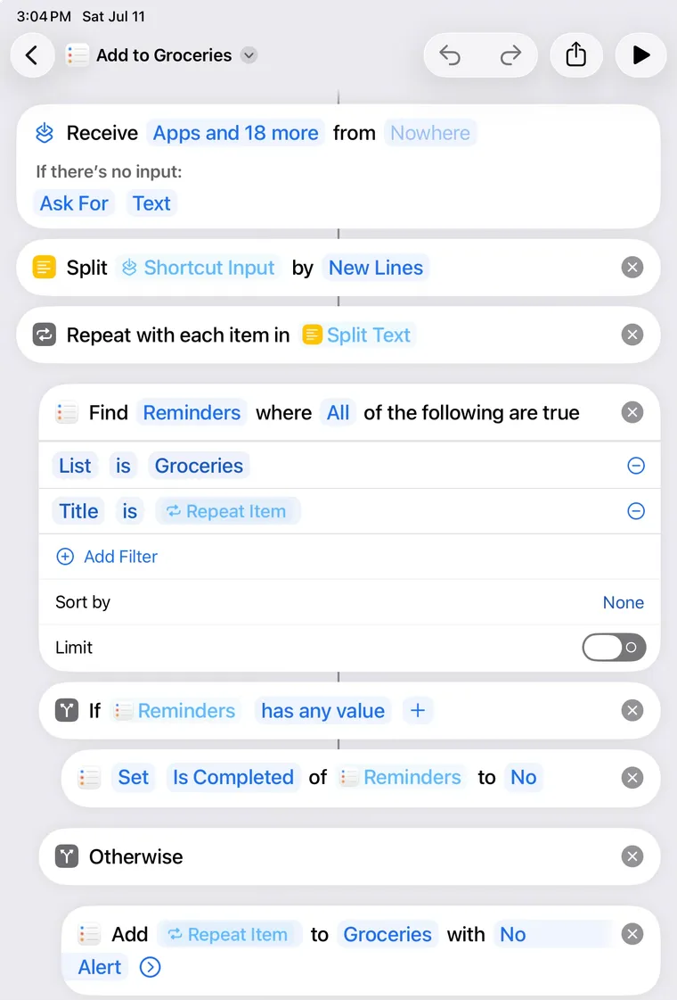

How this works. Pick Food or Drinks, search or filter, then tap a dish to open it and page left/right through the rest. Tap on anything you’re making to add it to your list — it scales to your servings, merges duplicates, and copies (or sends to Reminders) in one tap.
Nothing matches those filters yet. and try again.
Cook mode · screen stays on
Set servings per dish and quantities rescale. Identical ingredients merge across dishes (garlic by the bulb, citrus by the fruit, bitters by the bottle) and the list is grouped the way a store is laid out. Only checked items copy. Pantry staples start unchecked — a flags what you probably already have, and optional bits sit in their own section.
Add to Reminders hands checked items to a Shortcut, which drops each one into your Groceries list as its own reminder. Takes about a minute, once:

Don't want to set that up? Tap Share… instead — same list, no setup, but Reminders will file it as one reminder with everything in its notes rather than separate checkable items.